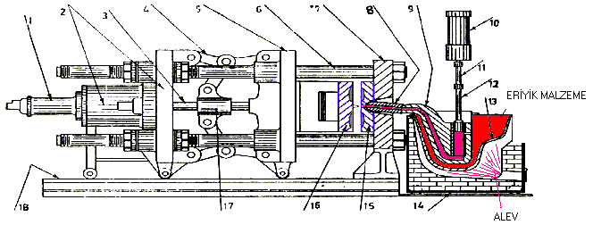

|
Erkan
Kahraman
Yrd. Doç. Dr. Çetin Karataþ
Gazi Üniv. Teknik Eðitim Fak. Makine Böl.
Mayýs 2005
ÖZET
Alüminyum,
kalay, kurþun, bakýr, inko gibi hafif alaþýmlarýn kaliteli,
hassas ayný zamanda seri bir þekilde üretebilmek için basýnçlý
döküm yöntemi tercih edilmektedir. Basýnçlý pres dökümde;
üretilecek malzemenin alaþýmý, mekanik özellikleri göz önüne
alýnarak parçanýn kalýplanmasý sýcak ve soðuk kamaralý olarak
iki yöntem ile yapýlmaktadýr. Üretilecek malzemenin cinsine
göre seçilecek yöntemin belirlenmesinde ayný zamanda üretimin
istenilen kalitede ve hassasiyette yapýlabilmesi için kalýp
yapýmýnda kullanýlan kalýp malzemelerinin, parçanýn çýkarýlmasýnda
kullanýlan iticilerin, kalýplanan malzemenin soðutulmasý için
kullanýlan soðutma kanallarýnýn, kalýp içerisindeki havanýn
tahliyesi için gerekli olan havalandýrma kanallarýnýn, daðýtýcýlarýn
seçimi için gerekli olan etmenler açýklanmýþtýr.
1-
GÝRÝÞ
Basýnçlý
döküm klasik döküm yöntemi ile makine hacim kalýpçýlýðýnýn
birleþtirildiði bir sistemdir. Benzer sistemlerden farklýlýklar
sunan basýnçlý döküm yöntemi bir çok malzeme üretiminde tek
bir metal kalýp kullanýlarak sývý metalin kalýp içerisine
basýnç altýnda basýlmasý ile gerçekleþir. Basýnçlý dökümde
kaliteyi yakalaya bilmek ve ayný zamanda kalýbýn kýsa sürede
yýpranmasýný önlemek için üretilecek malzemenin alaþýmý, biçimi
v.b. özellikleri göz önünde bulunarak kalýbýn tasarlanmasý
gerekmektedir. Tasarýmýn yaný sýra kalýba uygun basýnçlý döküm
makinesi de belirlenmelidir.
2-
BASINÇLI DÖKÜM
Basýnçlý
Döküm; düþük sýcaklýkta ergime ve metal kalýplar içerisinde
kalýplana bilme özelliði olup da demir ve çelik olmayan metal
ve metal alaþýmlarýnýn yüksek basýnç altýnda biçimlendirilmesine
"Basýnçlý Döküm " denilmektedir (1).
Basýnçlý dökümle bisiklet parçalarý, atal býçak takýmlarý,
saatler, klimalar, kül tablalarý, el aletleri, motorlar, kilitler,
makaralar, valfler, traktör parçalarý, tren parçalarý, elektrik
aletleri, dürbünler, hava freni donanýmý, savaþ gereçleri,
roket parçalarý v.b. gibi yapýmý özen gerektiren önemli parçalar
üretilebilmektedir (Þekil 1) (2).
Þekil 1. Yukarýda basýnçlý dökümde üretilmiþ olan bilgisayar,
bisiklet, motor ve motosiklet sektöründe kullanýlan parçalardan
örnekler verilmiþtir.
Basýnçlý
Döküm Yöntemleri ve Makineleri
Basýnçlý
döküm makinesinin fonksiyonu kalýbýn iki parçasýnýn tam ekseninde
ve saðlam olarak tutmak, yeterli miktarda erimiþ madeni kalýba
basýnç altýnda göndermek ve kalýbýn iki parçasýný açýp kapatarak
dökülmüþ parçanýn kalýptan çýkarýlmasýný saðlamaktadýr. Kalýp,
içine dökülecek parça oyulmuþ, maça itici ve benzeri parçalar
eklenmiþ, basýnçlý döküm makinesi tablalarýna ayný eksende
monte edilmiþ iki çelik bloktan meydana gelir (3).
Basýnçlý
döküm makineleri, metal basma sisteminin farklý oluþuna göre
"sýcak kamaralý" ve "soðuk kamaralý" makineler
olarak baþlýca iki ana guruba ayrýlýr. Basýnçlý döküm makinesi
seçimi dökülecek malzemenin özeliklerine ve yapýsýna göre
seçilmektedir (4).

1-
Sýcak Kamaralý Döküm Yöntemi;
Sýcak
kamaralý basýnçlý döküm makinelerinde ergime sýcaklýðý 327°C
olan kurþun, 420°C olan çinko, 232 °C olan kalay gibi ergime
sýcaklýklarý düþük olan malzemelerin kalýplanmasýnda kullanýlýr.
Bu yöntemle çok küçük ve hassas, hepsi ayný özelliðe sahip
parçalar seri halde dökülebilir. Sýcak kamaralý döküm yöntemi
ile üretim sonucunda ±0,05 mm hassasiyet elde edilebilir.
Üretim sýrasýnda 10-80 atmosfer basýnçla çalýþýldýðýndan üretilmiþ
parçalarýn üzerinden ikinci bir suretle talaþ kaldýrýlmasýna
gerek duyulmaz. Sýcak kamaralý döküm yönteminde kullanýlan
makineler çalýþma sistemlerine göre ikiye ayrýlmaktadýr (5).
a-)
Pistonlu makineler sýcak kamaralý makineler;
Þekil
2'de görünen pistonlu makinelerda; Fýrýn içerisine pik bir
pota yerleþtirilir. Bu potaya monte edilen silindir ergimiþ
alaþýmýn içine gömülür. Silindir içindeki piston bir levye
ve eksantrik mekanizma ile yatay yönde çalýþtýrýlýr. Ergimiþ
metal bir delikten geçerek yer çekimi etkisi silindiri doldurur.
Çalýþtýrma levyesi çekildiðinde piston kolu pim çevresinde
dönerek pistonu silindir içinde hareket ettirir. Pistonun
ileri hareketi önce silindirde metal giriþ deliðini kapatýr,
sonra da silindirdeki metali kalýba basar (4).
Bu sistem ile yaklaþýk olarak 20 kg/cm²'yi aþan basýnçlara
eriþmek mümkün olabilmektedir. Ayrýca sývý metal en kýsa sürede
ve en az ýsý kaybý ile enjekte edilebilmektedir (2).

Þekil
2. l-Kapama silindiri, 2-Gövde, 3-Ana mil 4-Kollar, 5-Kayar
plaka, 6-Kýlavuzlar, 7-Ön plâka, 8-Meme 9-Deve boynu 10- Baský
silindiri 11-Piston kolu, 12-Piston, 13-Pota, 14-Fýrýn, 15-Kapak
kalýbý, 16-Ýtici kalýp, 17-Kroshed, 18-Þasi.
b-)
Basýnçlý hava ile çalýþan sýcak kamaralý makineler;

Þekil 3. Basýnçlý hava ile çalýþan makinenin basit görünüþü
Þekil
3'de basýnçlý hava ile çalýþan döküm makinelerinde metal basma
sistemi için tipik bir örnek verilmektedir. Bu makine görünüþ
itibari ile kaz boynunu andýrdýðý için kaz boynu tipide denilebilir.
Hareket kolunun yardýmý ile hareket koluna baðlý bulunan kaz
boynunun sývý metal içerisine daldýrýlmasý saðlanýr. Sývý
metal içerisine daldýrýlan kaz boynu içerisine doldurma kanalýndan
ergitilmiþ metal dolar daha sonra hareket kolu yardýmýyla
kaz boynu sývý metali kalýba basacak þekilde kilitlenir sonra
sývý metal, kaz boynundan kalýba yüksek basýnçlý bir hava
ile doldurulur. Bu tip makinelerda kalýba sývý metalin doldurma
iþlemi yaklaþýk 35 kg/cm² basýncýndaki hava ile gerçekleþmektedir.
Burada depo içindeki sývý metal ergime noktasýnýn oldukça
üstünde bir sýcaklýkta tutulur.
|